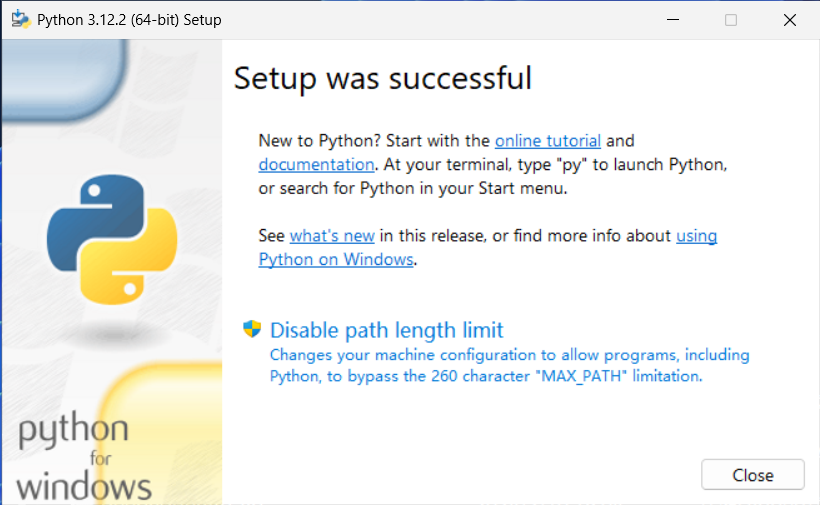
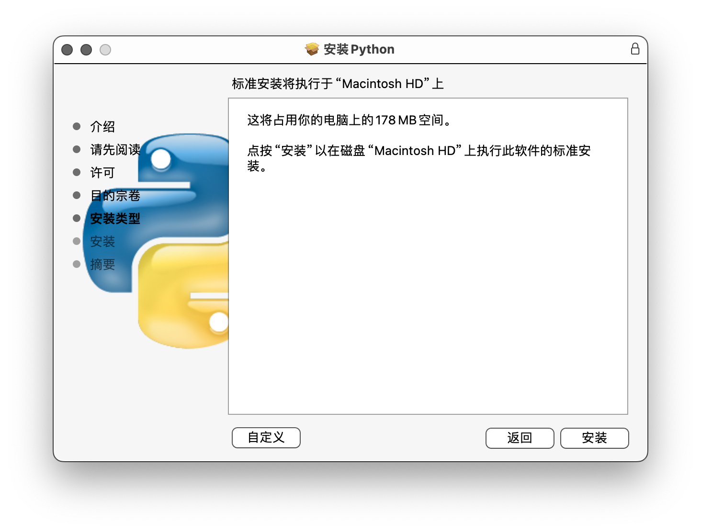

第一章：下载并安装 Python
在 Windows 上下载安装
像 Windows7、Windows8 这类已经不再支持的旧版 Windows，可能无法下载高版本的 Python，建议更新到 Windows10 或 Windows11。
要在 Windows 上下载 Python，请先打开 Python 的官方网站：https://www.python.org。这可能有点慢，需要耐心等待。
打开之后，可以看到如下结果：
点击图示 Downloads 一栏，进入下载网页。如果无法进入，可以直接访问下载网址链接 https://www.python.org/downloads/。本篇文章创作时的最新版本为 Python3.12.2，尽量下载最新的版本。版本号第三个数字实际上无所谓。
在网页中点击 Download Python 3.12.2（或者更新的版本，这个按钮会下载最新版本），就可以根据自己的系统下载安装程序。
下载可能需要一段时间，请耐心等待。下载完成后，打开安装程序：
注意一定要勾选最下方的选项 Add python.exe to PATH。然后点击上面的 Install Now 安装。随后便只要等待安装即可。
安装过程如下所示：
最后，安装完成，单击 Close 按钮即可。
最后检查是否安装成功，只要在终端（使用 cmd 程序或 powershell 程序）内输入：
python
如果有得到像下面这样的输出（版本号看你自己安装的是那个版本的，这里是 Python3.12.0），代表已经安装成功。注意，如果没有提前勾选 Add python.exe to PATH，则即使安装成功也不会得到正确输出。此时需要手动设置 PATH 环境变量。本文不再赘述，可以自行搜索。
Python 3.12.0 (tags/v3.12.0:0fb18b0, Oct 2 2023, 13:03:39) [MSC v.1935 64 bit (AMD64)] on win32
Type "help", "copyright", "credits" or "license" for more information.
>>>
在 MacOS 上下载安装
同样打开 Python 官网 https://www.python.org，然后按照和 Windows 一样的方法打开下载网页，并下载安装软件包。等待下载完成之后，打开软件包，如图所示：
单击 继续。
这部分包含软件包在安装时可能的行为等等，一般可以跳过（除非你真的需要检查）。单击 继续。
这部分包含历史和用户协议，一般可以跳过（除非你可能需要阅读）。单击 继续。
随后需要你同意用户协议。单击 同意。
下面将进行安装。尽量不要自定义安装。如果必须要，单击 自定义 并按照网上的其他教程配置信息。这里我们直接点击 安装。然后需要你输入用户密码或使用触控 ID（指纹）。随后，便开始安装：
现在进入安装阶段，稍等片刻，最后会显示：
点击 关闭 即可。
打开终端，在终端内输入：
python3
如果得到正常输出（和 Windows 类似，见上），代表安装成功。
在 Linux 上下载安装
Linux 上的安装相对简单一些。打开终端，输入以下命令：
sudo apt-get install python3
该指令需要 root 用户权限，你可能需要输入用户密码。如果你的软件包管理器没有升级到最新，可能下载不到最新的 Python。
下载安装完成后，输入以下指令，如果没有出错，正常显示输出（和上面的类似），那么说明安装成功了。
python3